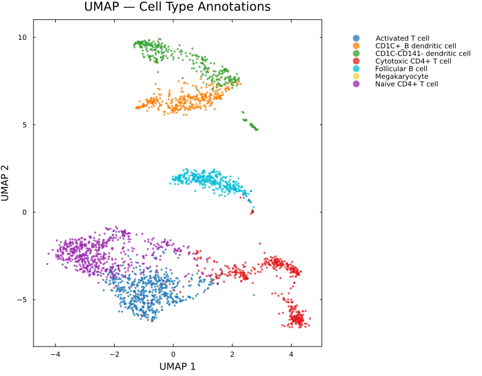
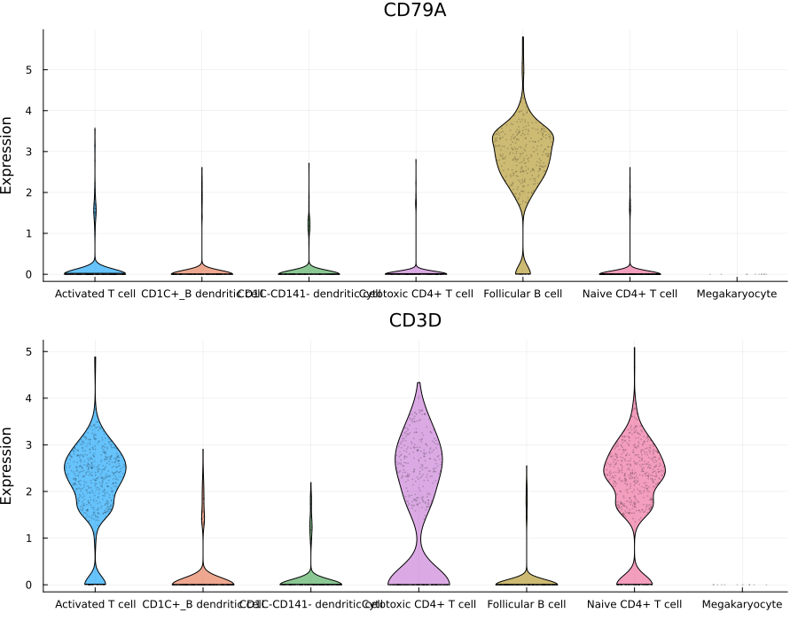
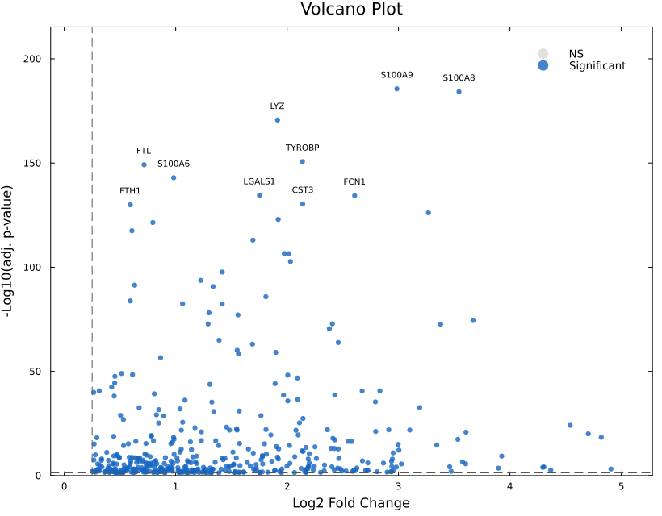
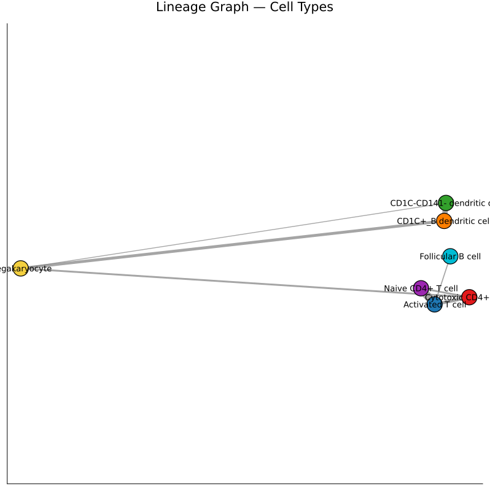
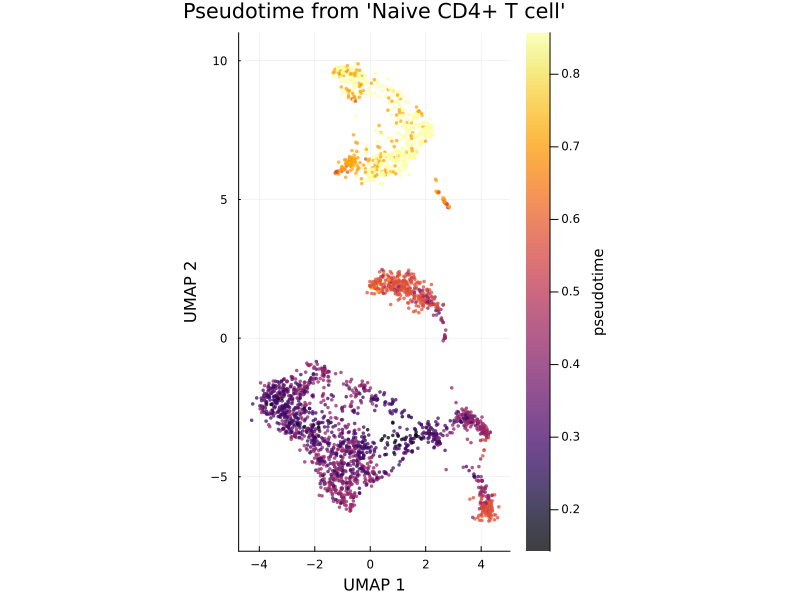
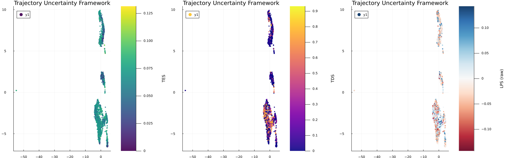

PBMC 3k Case Study: End-to-End Single-Cell Analysis with SiCell.jl
Overview
This case study demonstrates a complete single-cell RNA sequencing (scRNA-seq) analysis workflow using SiCell.jl on the widely used 10x Genomics PBMC 3k dataset.
Starting from raw count matrices, we perform:
- Quality control and preprocessing
- Dimensionality reduction
- Graph-based clustering
- Automated cell type annotation
- Marker gene analysis
- Differential expression visualization
- Diffusion-based trajectory inference
- Trajectory Uncertainty Framework (TES, TDS)
This example highlights how SiCell.jl provides an integrated workflow from raw sequencing data to biologically meaningful insights.
1. Data Loading and Quality Control
The PBMC 3k dataset contains approximately 3,000 human peripheral blood mononuclear cells.
After quality filtering, 2,643 high-quality cells were retained for downstream analysis.
obj = read_10x(DATA_PATH)
calculate_qc_metrics!(obj)
filter_cells!(
obj,
min_genes=200,
max_mito=5.0
)2. Normalization and Feature Selection
The filtered dataset was normalized and highly variable genes were identified.
normalize_data!(obj)
find_variable_features!(obj)
run_pca!(obj)3. Clustering and UMAP Visualization
A K-nearest-neighbor graph was constructed followed by graph-based clustering and UMAP visualization.
find_neighbors!(obj, k=30)
run_clustering!(
obj)
run_umap!(obj)Cell Population Structure
The resulting UMAP reveals clearly separated immune populations.

Figure 1. UMAP representation of PBMC cells colored by graph-based clusters.
4. Automated Cell Type Annotation
Cluster marker genes were identified and compared against CellMarker references to assign biological identities.
markers = find_all_markers(obj, group="cluster")
db = load_cellmarker(species="Hs")
annotate_clusters!(
obj,
markers,
db,
species="Hs"
)The analysis identified several major immune populations:
| Cell Type | Number of Cells |
|---|---|
| Naive CD4+ T cells | 592 |
| Activated T cells | 583 |
| Cytotoxic CD4+ T cells | 447 |
| Follicular B cells | 337 |
| CD1C+ B dendritic cells | 348 |
| CD1C-CD141- dendritic cells | 325 |
| Megakaryocytes | 11 |
5. Marker Gene Validation
Expression visualization confirms expected lineage-specific markers.
For example:
- CD3D is enriched in T-cell populations.
- CD79A is enriched in B-cell populations.
violin_plot(
obj,
features=["CD3D", "CD79A"],
group="cell_type"
)
Figure 2. Canonical immune markers validate automated cell-type annotation.
6. Differential Expression Analysis
SiCell.jl provides efficient marker detection and visualization tools.
markers = find_all_markers(
obj,
group="cluster"
)The resulting markers can be explored using volcano plots.

Figure 3. Differentially expressed genes highlighting cluster-specific signatures.
7. Population Connectivity Analysis
To investigate relationships between cellular populations, SiCell.jl computes PAGA-style connectivity graphs.
paga_plot(
obj,
reduction="umap",
cluster_col="cell_type"
)The PBMC connectivity structure revealed strong relationships among T-cell populations, while B cells and dendritic cells formed distinct transcriptional neighborhoods.

Figure 4. Population-level connectivity graph between annotated immune cell types.
8. Diffusion-Based Trajectory Inference
To investigate continuous cellular transitions, a diffusion map was computed and pseudotime was initialized from the Naive CD4+ T-cell population.
run_diffusion_map!(obj)
run_pseudotime!(
obj,
root_type,
cluster_col="cell_type"
)Pseudotime reconstruction reveals gradual transitions across immune states.

Figure 5. UMAP colored by diffusion pseudotime.
9. Trajectory Uncertainty Framework (TUF)
Traditional pseudotime provides a single ordering of cells but does not indicate whether the local trajectory is well-defined or ambiguous.
SiCell.jl introduces the Trajectory Uncertainty Framework (TUF), composed of:
- Temporal Entropy Score (TES) — quantifies local temporal mixing.
- Trajectory Divergence Score (TDS) — quantifies disagreement among forward developmental directions.
- Local Progression Score (LPS) — measures local progression tendency along the trajectory.
trajectory_uncertainty!(
obj,
key_prefix="traj_unc"
)Global Summary
| Metric | Mean | Maximum |
|---|---|---|
| TES | 0.061 | 0.132 |
| TDS | 0.216 | 0.932 |
Cell-Type-Level Trajectory Uncertainty
Averaging uncertainty metrics across cell populations provides insight into their trajectory behavior.
| Cell Type | TES | TDS |
|---|---|---|
| Activated T cells | 0.068 | 0.281 |
| Naive CD4+ T cells | 0.064 | 0.362 |
| Cytotoxic CD4+ T cells | 0.062 | 0.194 |
| Dendritic cells | ~0.06 | 0.09–0.13 |
| Follicular B cells | 0.046 | 0.092 |
Notably, T-cell populations exhibited elevated TDS values, suggesting greater diversity in potential future transcriptional directions compared with more stable B-cell populations.

Figure 6. TES, TDS, and LPS visualized across the PBMC manifold.
Conclusion
This case study demonstrates how SiCell.jl integrates all major components of modern single-cell analysis within a unified Julia framework.
Using a single workflow, we:
- Processed raw 10x Genomics data.
- Identified biologically meaningful immune populations.
- Validated annotations through canonical marker expression.
- Characterized population relationships using connectivity analysis.
- Reconstructed continuous cellular trajectories.
- Quantified trajectory ambiguity using the novel TUF framework.
SiCell.jl enables researchers to move from raw sequencing data to biological insight using a high-performance and reproducible analysis environment.
Complete analysis script: examples/pbmc3k_full_pipeline.jl